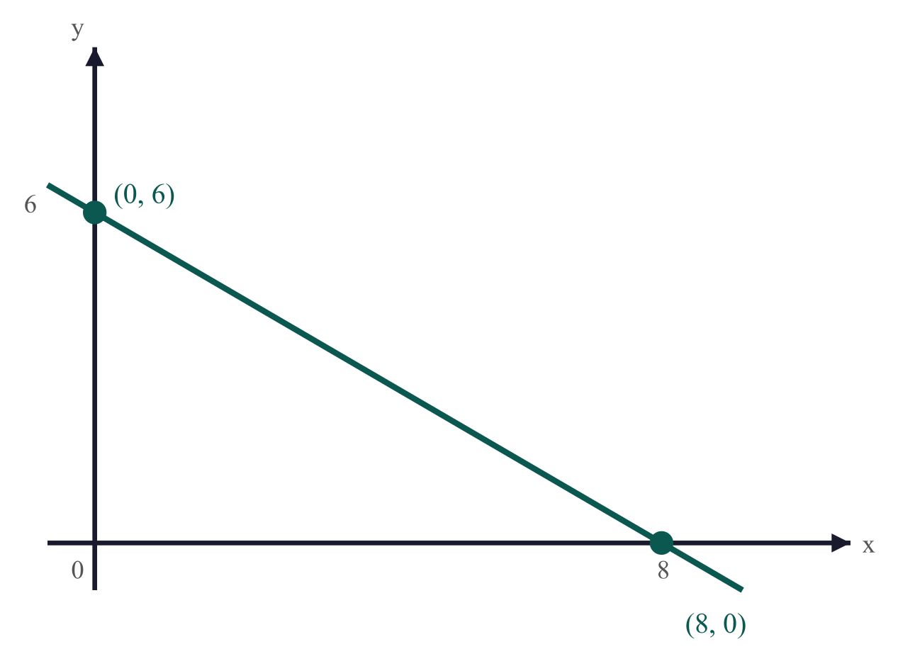

Ya conoces la tarifa del taxi como función afín: f(k) = 60k + 50, con a = 60 y b = 50. Ahora vas a nombrar formalmente qué es cada uno de esos números y vas a conocer un tercer dato: la raíz.
La pendiente (a)
En f(x) = a·x + b, el número a se llama pendiente. Indica qué tan rápido cambia f(x) cuando x aumenta, y en qué sentido:
Si a > 0, la función es creciente: al aumentar x, aumenta f(x). La recta "sube" de izquierda a derecha.
Si a < 0, la función es decreciente: al aumentar x, disminuye f(x). La recta "baja" de izquierda a derecha.
Ejemplo con pendiente positiva
La tarifa del taxi: f(k) = 60k + 50. Acá a = 60 > 0: cada kilómetro que se agrega, el precio aumenta $60. Es creciente.
Ejemplo con pendiente negativa
Una vela mide 20 cm y se consume 2 cm por cada hora que está encendida. Su altura, en función de las horas encendida, es:
f(x) = −2x + 20
Acá a = −2 < 0: cada hora que pasa, la altura disminuye 2 cm. Es decreciente.
Caso constante: a = 0
Si a = 0, f(x) = b: la salida permanece constante. Por ejemplo, f(x) = 5, con dominio real, tiene pendiente 0, ordenada 5 y recorrido {5}. Su gráfica es una recta horizontal que pasa por (0,5). No tiene raíces, porque nunca vale 0.
En cambio, en f(x) = 0 todas las entradas del dominio son raíces.
| x | −2 | 0 | 2 |
|---|---|---|---|
| f(x) | 5 | 5 | 5 |
Ordenada en el origen (b)
El número b se llama ordenada en el origen: es el valor de f(x) cuando x = 0, y coincide con el término independiente de la expresión. En la gráfica, el punto de intersección con el eje y es (0, b).
Taxi: b = 50. Con 0 km recorridos, ya hay que pagar $50 (la bajada de bandera). Corte con el eje y: (0, 50).
Vela: b = 20. Con 0 horas encendida, la vela mide 20 cm, su altura inicial. Corte con el eje y: (0, 20).
Raíz o cero
La raíz (o cero) de una función es el valor de x para el cual f(x) = 0. En la gráfica, el punto correspondiente es (x, 0), donde x es la raíz. Para hallarla, se iguala la expresión a 0 y se despeja x.
Ejemplo resuelto: la raíz de la vela
¿Después de cuántas horas se apaga la vela (altura 0)? Se busca la raíz de f(x) = −2x + 20:
−2x + 20 = 0
−2x = −20 (se resta 20 en los dos miembros)
x = 10 (se dividen entre −2 los dos miembros)
Raíz: x = 10. Corte con el eje x: (10, 0). Después de 10 horas encendida, la vela se consume por completo. Tiene sentido en el contexto: 10 es un número positivo de horas.
Para pensar: ¿Qué pasa si buscamos la raíz de la tarifa del taxi, 60k + 50 = 0? Da un valor de k negativo, que no tiene sentido: no se puede recorrer una cantidad negativa de kilómetros. Por eso el dominio de esa función (k ≥ 0) no incluye su raíz matemática: no toda función tiene una raíz que tenga sentido en su contexto.
Ejercicios
1. Para f(x) = 5x − 15: indica la pendiente y la ordenada en el origen. ¿Es creciente o decreciente? Calcula su raíz.
2. Un tanque tiene 300 litros y se vacía a razón de 25 litros por minuto: f(x) = −25x + 300. Indica pendiente, ordenada en el origen y si es creciente o decreciente. Calcula la raíz y explica qué significa en esta situación.
3. Observa el gráfico:

Indica la ordenada en el origen y la raíz marcadas en el gráfico. A partir de esos dos puntos, ¿la pendiente de esta función es positiva o negativa? ¿Cómo lo sabes sin calcularla?
4. Piensa en una situación con pendiente negativa de tu vida cotidiana (algo que disminuye con el tiempo o con otra variable). Escribe su expresión analítica, indica a, b, si tiene sentido calcular su raíz en ese contexto, y por qué.
Fuente
Definiciones de ordenada en el origen, raíz y signo de la función según función polinómica de primer grado (material teórico del curso). Fernández, G. M. (2026). Reino Matemático. Crónicas de los Exploradores de 8.º [Material didáctico]. Liceo de Médanos.